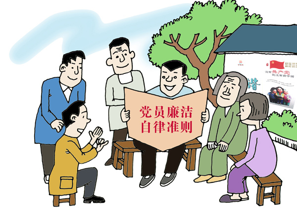
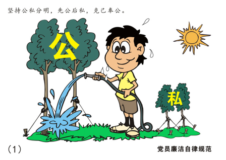
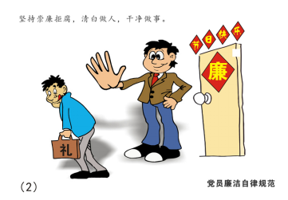
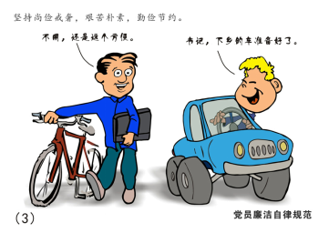
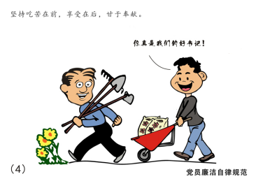
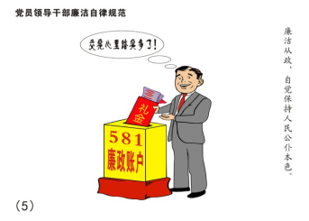
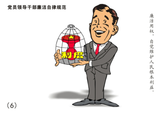
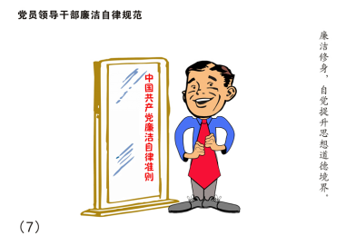
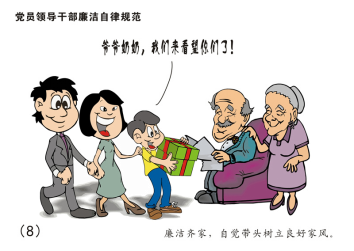

中国共产党廉洁自律准则
中国共产党廉洁自律准则
中国共产党全体党员和各级党员领导干部必须坚定共产主义理想和中国特色社会主义信念，必须坚持全心全意为人民服务根本宗旨，必须继承发扬党的优良传统和作风，必须自觉培养高尚道德情操，努力弘扬中华民族传统美德，廉洁自律，接受监督，永葆党的先进性和纯洁性。

党员廉洁自律规范
### 坚持公私分明，先公后私，克己奉公

无规矩不成方圆。我国是法治国家，依法治国是国之根本。党员不只是一层身份，也是一份沉甸甸的责任，我们有权利也有义务去帮助他人。先公后私有利于帮助我们政府建设服务型政府，拉近党群关系。身为党员，我们也需要克己奉公，严以律己，树立良好党员形象，做好榜样力量，建设和谐的社会主义国家。
在《中国共产党章程》中也有明确的要求：“中国共产党党员必须全心全意为人民服务，不惜牺牲个人的一切，为实现共产主义奋斗终身”；“除了法律和政策范围内的个人利益和工作职权外，所有共产党员都不得谋求任何私利和特权。”习近平总书记也曾在中国共产党第十八届中央纪律检查委员会第三次全体会议上强调道：“公款姓公，一分一厘都不能乱花；公权为民，一丝一毫都不能私用。”习总书记的讲话与党章要求一脉相承，为党员同志在思想上、行动上划清了公私界限，指明了方向。公私分明是基本操守，公而忘私是崇高境界，身为党员要正确处理好公与私的关系，在两者之间做好取舍。
坚持崇廉拒腐，清白做人，干净做事

党员都要加强廉洁意识，严格遵守法律法规，严守组织纪律，坚持原则，守住底线；坚持按规章制度办事、秉公办事，公私分明；坚持自重、自身、自警、自励，要“吾日三省吾身”。树立正确的利益观，正确看待利益、功名和权势，做到“谋事要实、创业要实、做人要实”。
我们党自成立之日起，就始终把清正廉洁作为关乎党的生死存亡的大事来抓。这也是今天我们党的执政地位能够稳如磐石的原因之一。在农村根据地时，党和红军严格实行三大民主、三大纪律、八项注意；新中国成立后，党领导全国人民挡住了“糖衣炮弹”的袭击，“拒腐蚀，永不沾”的清廉精神蔚然成风；党的十七大首次提出加强廉政文化建设，赋予清正廉洁新的内涵；党的十八大更是将腐败的危害性提高道了“亡党亡国”的高度。从党的历史中可以看出，清正廉洁一直时党的建设的基本环节。党员要永葆清正廉洁本色，就要从思想上筑牢拒腐防变防线，从行动上提高规范履职能力，坚持讲廉洁，争做干净干事干事干成事的合格党员。
坚持尚俭戒奢，艰苦朴素，勤俭节约

尚俭戒奢、朴素节俭既是中华民族的传统美德，也是我们党的优良传统。《左传·庄公二十四年》中有云：“俭，德之共也；侈，恶之大也。”改革开放以来，人民生活水平不断提高，但节俭意识却日渐淡薄，奢靡之风日益见盛。如果听任奢靡之风泛滥而不加控制，必将败坏党的形象、侵蚀党的肌体、腐蚀党的基业。
习近平总书记在党的十九大报告中指出：“全党一定要保持艰苦奋斗、戒骄戒躁的作风，以时不我待、只争朝夕的精神，奋力走好新时代的长征路。”这是要求我们党员同志在走好新时代的长征路时，也要保持艰苦朴素的作风。毛主席一生粗茶淡饭，生活极其简朴，一件睡衣补了又补，周总理在生活上也始终保持战争年代那种艰苦朴素的作风。艰苦朴素已经为共产党人最为鲜明的特征，也是赢得群众拥护爱戴的重要品格。
“不忘初心，方得始终。”只有不忘过去，才能开创未来。我们党员同志在保持艰苦朴素的作风上，不仅要保持共产党员外在的朴素之美，还应在内心坚守艰苦奋斗的精神高地，常想“一粥一饭，当思来之不易；半丝半缕，恒念物力维艰。”党员同志要深知成由勤俭败由奢的道理，自觉做到不必穿戴比内在、不比收入比风险、不比待遇比觉悟，以自身的实际行动传承和弘扬艰苦朴素的优良作风，展现新时代共产党的朴素之美、风险之风。
坚持吃苦在前，享乐在后，甘于奉献

“坚持吃苦在前，享受在后，甘于奉献”是党员廉洁自律规范中的第四条要求。这一条规范在党章中也有直接的体现，党章中第三条党员义务部分第三款明确规定：“坚持党和人民的利益高于一切，个人利益服从党和人民的利益，吃苦在前，享受在后，克己奉公，多做贡献”。
勇于吃苦、甘于奉献对于普通人而言可能是美德，然而对于党员而言，毫无疑问，则不仅仅是美德，更是党对党员的基本要求，是每个党员都必须要遵守的规范、要践行的准则。
“吃苦在前，享受在后”是我们党的优良传统，是我们党带领人民群众克敌制胜、排除万难的政治优势，“甘于奉献”是共产党人的崇高品格。要准确理解“吃苦在前，享受在后”的含义，关键在于把握这个“后”字。“享受在后”不是享受在自己人生的后半段，而是享受在天下人之后，享受在广大人民群众的后面，正如宋代思想家范仲淹所言的“先天下之忧而忧，后天下之乐而乐”。“甘于奉献”，就要不计较得失、不抱怨辛劳；把麻烦留给自己、把方便让给别人；把损失留给自己、把好处让给别人；把困难留给自己、把利益让给别人，使“俯首甘为孺子牛”成为共产党员的真实写照。
党员干部廉洁自律规范
### 廉洁从政，自觉保持人民公仆本色

廉洁从政的目的是要踏踏实实为人民服务，保持人民公仆的本色。清正廉洁，自古就是万民企盼、史家歌颂的为官典范。纵观历史，清正廉洁者名垂史册，受世人敬重，后人颂扬，而贪污腐败者不仅断送了锦绣前程，更搅得国脉不昌，民怨不绝。我们不难得出结论，历史兴衰的轮回与一国政治风气是否清正、一朝文武官员是否廉洁有着密切的联系，官员一心为百姓社稷，则国运昌盛，官员一心为自身享乐，则国殇将至。党员干部要深刻理解历史兴衰背后的必然规律，始终严格规范的自己思想，约束自己的行为，不断增强党性信念，时刻提高警惕，拒绝一切诱惑，做到一心为民着想，一心为民服务，真正做到苦群众所苦，乐群众所乐。
为人民办实事，做好事，真正成为人民拥护的好公仆，是廉洁从政的自然要求。每个党员干部要不断增强宗旨意识，真正将“为人民服务”作为从政理想，将实现人民群众的幸福作为从政的工作方向，将各项服务举措落到实处。首先，要处理好做官与做人的关系。做好官，用好权，先要做好人，才能以一身正气赢得群众信赖。其次，要正确看待群众工作。人人心中有一杆秤，处理好与群众的关系，取得群众的理解和信任，是我们做好工作的先决条件。在实际工作中，要自觉维护群众的利益，深入群众，体察民情，把群众的冷暖放在心中，为群众办实事、办好事。还要不断提高自身能力。要清醒地认识到，权力不一定等于能力，干一番事业，办几件实事，光有为人民服务的热情是不够的，光有洁身自好的品格也是不够的，党员干部需要不断增强事业心和责任感，在实践中加强学习，积累经验，提高能力。
廉洁用权，自觉维护人民根本利益

勿忘初心 方得始终。对党员领导干部来说，耐得住清贫、顶得住歪风、经得住诱惑、管得住自己，对手中掌握的权力常怀敬畏之心，管好权、用好权，才能自觉维护人民根本利益；权为民所赋、权为民所用，党员领导干部时刻把党的事业放在心上，把群众的事情装在心中，为民用权、为民谋利，才能受到人民群众的爱戴。
权力是党和人民赋予的，是用来为党分忧、为民谋利的，各级党员领导干部务必廉洁用权，自觉维护人民根本利益。“权为民之福杖，廉乃官之仪表。”党员领导干部要用权为民，就必须提高觉悟，坚定信念，锤炼意志，增强免疫力，真正做到政治立场不动摇、理想信念不淡化、是非面前不糊涂、党性原则不丧失。只有这样，才能耐得住清贫，顶得住歪风，经得住诱惑，管得住自己，对手中所掌握的权力常怀敬畏之心，管好权用好权，真正做到“权为民所用，利为民所谋，情为民所系”，时刻把党的事业放在心上，把群众的事情装在心中，将广大人民的利益置于至高无上的地位。
廉洁修身，自觉提升思想道德境界

修身就是修养身心。习近平总书记所讲的“加强党性修养，坚定理想信念，提升道德境界，追求高尚情操，自觉远离低级趣味，自觉抵制歪风邪气”，就是修身的内涵、修身的标准，也是党员领导干部保持本色的必然要求。
党员领导干部修身就要修品德，要以德修身、以德服众、对党忠诚；修身就要修素养，自觉远离低级趣味，始终保持高尚的道德情操和健康的生活情趣；修身就要修言行，要讲诚信、守规矩、严操守，做到言行一致、表里如一、知行合一，自觉抵制歪风邪气。
党员领导干部要把塑造高尚的道德品格作为终身追求，不断提高道德认识，陶冶道德情操，锤炼道德意志，提升道德境界，培养自己的浩然正气。始终做到心中有党、心中有民、心中有责、心中有戒，践行为民服务宗旨，做一名忠诚、干净、担当的党员领导干部。
廉洁齐家，自觉带头树立良好家风

领导干部要正自身之德。立身正方能正人，很多领导干部作为一家之主，他的道德标准、行为习惯深刻地影响着家庭风气，领导干部要言传身教，方能做到“问渠那得清如许？为有源头活水来”。领导干部要察细微之处。今天这个小错误放过了，明天那个小错误算了吧，最终量变引起质变，便为时已晚，因此要抓早抓小，不能养痈遗患。领导干部要持公正之心。自己的亲人犯了错，要一视同仁，不可以“情”盖“理”。
领导干部的家风连接着党风政风，古语有云：“修身，齐家，治国，平天下。”这是一个递进关系，尤其是作为领导干部，要做到“三严三实”，以道德标准与党纪法规对自我加强约束，再以自我为标杆影响、感染、教育家人，树立良好家风，只有做到自身正，家风清，方能党风肃、政风廉。